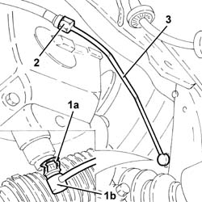

1820B46 RIGID supply PIPE from (pump) - master cylinder R.R .
- Path
- Procedures > 18 CLUTCH > 1820 CLUTCH RELEASE CONTROLS > 1820B HYDRAULIC CLUTCH SYSTEM > 1820B46 RIGID supply PIPE from (pump) - master cylinder R.R .
- Kind
- repair procedure (removal / refitting; the operation number is the code)
- Applies to
- all engines; all production periods
- Interactive page
- https://sloeber94.github.io/elrnDB-a147/en/#/3025114
Applies to: all engines; all production periods
 Removing
Removing
 Refitting
RefittingPosition the vehicle on the ramp.
4450B02 left front wheel r r .
Remove the protective cap for the bleed valve on the left front brake caliper.
Connect the collection system (pipe and reservoir) to the bleed valve on the brake caliper.
Operate the brake pedal until the brake-clutch fluid reservoir is empty.
1. Remove the split pin (1a) and axially extract the connector for the rigid supply pipe from the master cylinder (1b), master cylinder side.
2. Undo the intermediate connector for the rigid supply pipe from the master cylinder, vibration damper side.
3. Remove the rigid supply pipe from the master cylinder.

Applies to: all engines; all production periods
Refitting
RemovingPlace the rigid supply pipe from the master cylinder back in its housing.
Tighten the intermediate connector for the rigid supply pipe from the master cylinder, vibration damper side, to the recommended torque.
 | Fastening | Component | Ø | Value (daNm) |
|---|---|---|---|---|
- | Connector | RIGID DELIVERY PIPE FROM MASTER CYLINDER | M12 | (Vibration damper side) 1.7÷1.9 |
Axially introduce the connector for the rigid supply pipe from the master cylinder, master cylinder side, and secure it using the split pin.
4450B02 left front wheel r r .
Bleed the air from the braking system 3330A14 HYDRAULIC BRAKING SYSTEM - Bleed air .
1820B08 Clutch release HYDRAULIC SYSTEM - Bleeding air and restoring level .
Remove the car from the ramp.